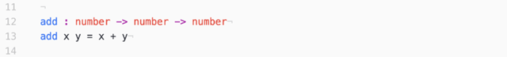

Single-Page Web Apps in ELM
Part One:
Getting Started with
a New Language

Kevin Greene
Senior UI Engineer
Other Posts in this Series:
• Part Two - Functional Routing
• Part Three - Testing and Structure
• Part Four - Side Effects
Introduction
As the words "Part One" in the title should give away, this is the first in a series of posts about building single-page web apps in Elm. I think this will be a four part series, but that may change. The way I see it now, this series will take this form:
Part one will introduce Elm, the Elm architecture and set up our project directory.
Part two will get into the architecture of our particular application and introduce routing in Elm.
Part three will be the most code-heavy of the series as we crank through most of our implementation. If this series becomes more than four parts, it'll be this part splitting up.
Part four will be refactor, clean-up and review.
As I write these I'll update the Github repo with branches corresponding to each part in the series. I also plan to publish one post a week until finished, but until it's done we won't know if I reach that goal.
I am writing this series with the assumption that you are familiar with JavaScript and writing single-page apps in JavaScript. I am also assuming no particular familiarity with Elm. I am starting from that and building up to writing our application in Elm. I will often compare Elm to JavaScript and translate Elm code to JavaScript for illustration. There are other very good tutorials introducing Elm and the Elm architecture. I will often reference to those and provide many links. I will go through a quick introduction to the Elm language and architecture here, but this series is really about how you build the kind of complex web apps in Elm that you are used to writing in JavaScript.
What is This Application you Speak Of?
I want the application we write to be of enough complexity as to be a reasonable representation of the kind of code you would write for a production app, but obviously simple enough to complete in a relatively limited amount of time. With that in mind, we are going to write a simple blogging application. There will be a list view for browsing posts, a detail view for reading posts and an edit view for writing posts. We'll implement a few features that go a bit beyond the basics. We'll support auto-save. We'll support markdown. We'll support saved drafts. And we'll support off-line editing. We'll also implement some simple authentication for the edit view. First though, we need to learn what Elm is and how to use it.
So, What is Elm?
Elm is a compile-to-JS language that has been around for a while, but has been getting more attention lately. The ideas it presents are interesting and its influence beyond its own community is rather astounding. Even if you are not familiar with Elm you have probably been influenced by Elm in some way, particularly if you are working with React. Redux and Cycle.js are attempts to bring the Elm Architecture to JavaScript. Elm code is very declarative and makes many problems much easier to reason.
Elm is unique to other popular compile-to-JS languages in that it does not aim to make incremental improvements to JavaScript, to make JavaScript type-safe or to make JavaScript more concise. It is not JavaScript + something. It is something different entirely, a pure functional language designed for building front-end applications.
There are several things a JavaScript developer may find to be a barrier when trying Elm for the first time. The first thing is the syntax. Elm fits under the umbrella of ML-family or ML-derivative languages. Which means the syntax is completely different than C-based languages you are most likely used to. Unless you are familiar with Standard ML, Haskell, OCaml, or some other language in that tree of programming languages, the syntax is going to be something new to you. I've seen this be very frustrating for some people. Even when you've switched between languages before syntax has likely been very similar. JavaScript, Java, C, Swift, php, Python... all look very similar. Your eyes are trained to a certain syntax when reading code.
Just to get our feet wet, this is an add function written in JavaScript:

The same function in Elm:

Note: Elm is statically typed, but the type declaration is optional. Elm will infer types for you. However, the type declarations are great documentation and are considered good practice.
Say goodbye to using parenthesis and commas to define function parameters. In Elm parameters (and arguments on invocation) are separated by spaces. Shouldn't we declare add to be a const or var? No, all data in Elm is immutable. Const by default.
The other big thing that can be a barrier to people when trying Elm for the first time is that it is a pure functional language. You can't jQuery or AJAX anywhere you want. You can't even console.log anywhere you want. Your functions need to be stateless. They must return the same result for the same input. Functions are merely a mapping of some input to some output. This isn't a suggestion, or a good practice to follow most of the time. The compiler will enforce this. The outside world is dirty. You must be careful when you interact with it. Being able to produce side effects anywhere breaks the statelessness of our functions. This is a big change to how JavaScript works and will force you to carefully plan how to handle your application's side effects.
If we're able to get through these barriers we'll find there is a lot to be offered by Elm. Because of its pure functional nature, and its excellent compiler, you are guaranteed to not have runtime exceptions. Wow, right? Because of the declarative nature of functional programming many complex implementations are reduced to one-line expressions.
Even if we take a look and decide it's not for us. We are likely to come away from the experiment as better programmers as we will be forced to look at old problems through a new lens. This act of being forced to solve old problems in new ways should remind us that problem solving is a creative process. There are many ways to solve the same problem. Keep an open mind.
Setting up Your Elm Environment
Before we get into how Elm code actually works, we need to set up our machines know about Elm code and how to deal with it. Everything you need is available in convenient installer form on the elm-lang website: elm-lang.org.
The "try" link will take you to an online environment that will allow you to jump in and start playing with the language immediately. There's even some sample code for you to look at and play with.
The install link will guide you through choosing the correct installer for your OS. For this tutorial we are using version 0.17 of the Elm Platform. The Elm Platform is all of the dev tools you need for Elm bundled up nicely for you.
Note: You don't have to install Elm globally. You'll notice you can use NPM to install Elm. You can use this to install Elm locally in a project directory just as you would a JavaScript dependency.
Once installation is complete you will have a few new commands available to you globally through the terminal. Well, really you'll have one new command, "elm". The elm command doesn't do anything by itself. It is used to run other useful tools that were installed as part of the Elm Platform. To get started, open a terminal and type in "elm". Hit enter and you will see a message like this:
Okay, so, a sneak peak at what we can do. When we installed the Elm Platform we were given four tools: make, package, reactor and repl.
Time to Setup our Project
We need a place to start writing some code, or this isn't going to make a whole lot of sense. There are two ways to proceed. You can clone the repo from my github link (Elm Tutorial) and just follow along, or you can do everything manually along with me here. The choice is yours. I will continue as if you are doing all these steps with me.
Elm Package
The first thing we need to do is make a directory for our new Elm project. Name it whatever you like. There are things I care about. This is not one of them. Once you have a new directory, navigate into that directory from the terminal. From here we are going to use the first of our Elm tools. Run "elm package install" from your terminal.
Note: If you are following from the git repo you should still run "elm package install" to download all dependencies.
This is similar to running "npm install". This did a couple of things for you. First, the upgrade plan it asked you to approve was simply to download the core libraries for Elm. Yes, we will need those. These were downloaded into a new "elm-stuff" directory within your project directory. "elm-stuff" is analogous to "node_modules". Second, you are no doubt familiar with the package.json in your JavaScript projects. Elm has the very similar elm-package.json. It has the same primary purpose, manage dependencies, for our Elm project. This file was created for us during "elm package install". If the elm-package.json file already existed "elm package install" would not have overwritten it. Instead it would have looked to the existing file to know what dependencies to install. Open elm-package.json in your text editor. You should see something much like this:
In the dependencies we have the core libraries we approved of in the upgrade plan. We also see the Elm version we are developing against. Other fields are there for you to update if you see fit.
There is another package we are guaranteed to need, "elm-lang/html". Before moving along, let's install that: "elm package install elm-lang/html". This will install the latest version. If you want to install a specific version you would type the command like this: "elm package install elm-lang/html 1.1.0".
This automatically updated our elm-package.json for us. We do not explicitly need "--save" or "--save-dev". We now have two dependencies.
Note: Semantic versioning. The Elm package manager does a very good job of enforcing that no breaking API changes occur in an Elm package update without a major version bump. That is you shouldn't have to worry about some developer pushing a package update to version 2.0.5 as version 2.1.0 if there are breaking changes. The package manager will force them to bump to 3.x. That's why in our elm-package.json we have versions pinned to less than next major version bump. This should always be safe.
It's About Time for "Hello World"
I want to see some code run. Do you want to see some code run? If I was writing this yesterday I would've probably been a little more motivated to not just use "hello world", but today I'm feeling lazy. The first thing we need to do is make our first Elm file. Make a new directory called "src". Inside of that create a new file called "Main.elm". It is convention in Elm to start file names with capital letters. Files equal modules in Elm. Do you mean I don't have to wrap everything in an IIFE to keep everything locally scoped? Yes, everything you write is scoped to the file you are in unless you explicitly export it. We'll cover module syntax later. Open your new file in a text editor and type this in. We'll learn what it all means soon enough, but for now trust the narrator.
When we write JavaScript we can just run code anywhere. Everything is an entry point. Like most compiled languages, Elm has a "main" entry point. If your Elm app doesn't have a "main" entry point the compiler will complain. The main entry point can have a few acceptable types. Here our main entry point has the type "main : Html". It is just the HTML to display on the page. As we start building more complex applications our main entry point will have the type "main : Program".
The HTML we build in Elm is actually virtual DOM, very similar to React. HTML in Elm will do the same virtual DOM diffing optimizations you see in React. In the case of our "hello world" application we are creating a virtual TextNode and assigning its contents to be the string "hello world".
Elm Make
We shouldn't need more than one guess to figure out what this does. Elm make will compile our Elm code into JavaScript. If you run "elm make
It generated an index.html file. All of the JavaScript is included in script tags on this HTML page. This is assuming you will be creating an Elm application that will be running by itself on the page and you will be assigning all CSS styles in your Elm code. For me, this is almost never the case. However, for our "hello world" app this is just fine. Open your new index.html in your favorite browser.
Well, that was exciting. If you look at your index.html you'll find it's really a lot of stuff to produce this. The compiler includes all of the libraries needed to support our application. The way things are working now, every time we run "elm make" this index.html file will be overwritten. Usually I want to include some external CSS and sometimes I want to include some external JavaScript (Elm will play nice with JavaScript).
If you don't want to generate an HTML page, or you want to generate an HTML page not named "index.html", you'll want to use the "--output" flag for the "elm make" command.
You can tell elm-make to output either an HTML file or a JavaScript file. If you output a JavaScript file you'll need to make your own HTML page to support this file. You'll want something like this:
We include the app.js file as we would any JavaScript file. The other thing we need to do is tell Elm how to launch our app. "Elm.Main.fullscreen();" tells Elm to load our app into the document body. You can also tell Elm to embed the app into some DOM node on the page. That would look like this:
This allows you to embed an Elm app into an existing website. You don't have to switch everything to Elm. It will play nicely with what you have already built.
There is a third option. That is we want Elm to do some computations for us, but we don't want it to output anything directly to the screen. We would invoke this kind of Elm app with "Elm.Main.worker();".
The application we are building in this tutorial will use the first option and create a fullscreen Elm application.
Elm Reactor
The third tool that the Elm Platform gave us was something called "reactor". What exactly is reactor? Reactor is a tool that will start a web server on your machine and recompile your code for you.
Now if I navigate to localhost:8000 I get a page like this:
Ah cool, it's the contents of our directory with some info about our project. But what's so special about this? The magic happens when you use the "File Navigation" to navigate to an Elm file. Navigate to src/Main.elm. Yes, the file we made earlier. You should see "hello world" on the screen again. Your running Elm application. Now, go to the Main.elm file in your text editor and change the file in some way. A suggestion would be to make a non-breaking change, like change the text from "hello world" to something else. To keep with my creativity so far, I'm going with "hello world 2". If you then go back to your web browser and refresh the page you'll see your changes. Elm reactor recompiles our code on page refresh without us having to use "elm make". Sweet, this should make iterating on our code a little quicker.
Okay, let's "control-c" and take a look at the last of our Elm Platform tools.
Elm REPL
You should already be familiar with read-evaluate-print loops. This is the one for Elm. Run "elm repl":
At the prompt we can type in any Elm expression and it will be evaluated.
Oooo, math, things aren't that different after all. We can also import any modules that have been installed in our directory.
If we want to reset the environment inside the REPL (remove any imported modules) there is a command for that:
Right there at the top it tells you about the help and exit commands. Those are pretty self-explanatory.
Leave the REPL open. We're going to start playing with the language and it'll be helpful.
Note: For more information on getting started with the Elm Platform you can visit the getting started page on elm-lang.org: Getting Started.
The Elm Language
This will be a quick general overview of the language. We'll be filling things in as we go. To start with, let's take a look at Elm values and types by just typing some stuff into the REPL and seeing how it's interpreted.
Strings
Elm has strings. Big surprise there I know. Strings are much the same as in other languages. Let's try concatenating two Strings. In JavaScript something like "hello" + " elm" would work:
Okay, well that didn't work at all. However, this is our first taste of the very polite and helpful Elm compiler errors. Yeah, so we have a type error. Read to the bottom it tells us if we are trying to concatenate strings in Elm we have to use the (++) operator.
When you type expressions into the REPL the REPL will give you the types of those expressions. We see the (+) operator is just for numbers, whereas the (++) operator is used for the much more generic sounding appendable. And yes, it works.
The more you use Elm the more you will find its compiler to be very helpful. You will not get long, cryptic Java-style stack traces. The compiler errors will usually be very helpful and point you straight to the problem, often with great suggestions about how to fix the problem.
Note: The official documentation for Elm Strings: Strings.
Operators and Infix Functions
Did you notice that (+) is actually a function? Elm is a functional language. It makes sense most things are functions. Do you know what else is a function? The (==) operator. Yes, (==) is for comparison.
Why are the (+) and (==) operators wrapped in parenthesis? This indicates that these are infix functions. That is they are binary functions that are used between their two arguments instead of before their two arguments. The names of infix functions are typically not alpha-numeric. We'll see other examples of infix functions as we move along.
We can apply infix functions as normal functions by wrapping them in parenthesis. Both methods of function application are equivalent:
Remember function arguments are separated by spaces in Elm.
If you were to type the + symbol into the REPL by itself without the parenthesis you would get an error because of the missing first argument:
Any binary function can be made into an infix function by wrapping it in backticks " ` ". This is not the single quote " ' ". The backtick is usually above the tab key.
Numbers
Let's look back at the type declaration of the (+) operator.
Elm has some type called number. This is a little misleading. Elm, unlike JavaScript, makes a distinction between Ints and Floats. Check this out:
5.66 can't be anything other than a Float, so that's what it is. 5 is interpreted as a number because it could still be treated as Float (5.0) or an Int (5). The number type can be thought of as a type that says Int or Float. In truth all types in Elm are supposed to be capitalized. The fact that number, and previously appendable, are not capitalized is a clue that these are special. We won't go too much into it, but when you see something like this it means Elm is expecting a value with particular characteristics rather than a particular type. Here, with number, Elm is just expecting some numeric type (Float or Int).
Elm then makes a distinction between integer and float division:
Just something to note, a product of Elm's static types.
Automatic Currying
Looking closer at the type declarations for the functions we've seen so far you'll notice at least one arrow (->) in each declaration. For the (+) function we saw something like this: "
All functions in Elm only take one argument. A function like (+) that is a binary function is really the composition of two functions that each take one argument. The first function takes a number and returns a function. The second function takes a number and returns a result.
To illustrate this let's look back at the add function we introduced early on:
Here we take advantage of the fact that all functions are curried to create a new function from an existing function. Taking add and only giving it its first argument returns a new function to receive the second argument. Because operators in Elm are also functions, we could also write the above as:
In JavaScript that would look like this:
The nice thing about currying in Elm is that it is automatic. In JavaScript we have to manually nest functions to produce currying. Also because arguments are applied to functions by spaces, and not parenthesis and commas, the syntax for applying curried functions is transparent.
Applying a curried function in JavaScript would look like this:
Note: For more on currying, here is an earlier post I wrote: Curry me This: Partial Application in JavaScript.
Type Variables
Continuing to look at type declarations we are going to look at something called type variables. If you are familiar with Java this is going to feel somewhat similar to generics in Java.
Take a look again at the (==) function:
Huh? Single, lowercase characters in a type declaration are type variables. This means that the function does not care what type it receives for this argument. In this case, where both arguments are represented by the letter "a", the types of both arguments are expected to be the same. If the types appeared as "a" and "b" that would indicate that the types could (but don't have to) be different. If we were to partially apply this with a number the type variable would go away.
Now we have a function that expects a number. The type variable was filled in with the type of the first argument, a number in this case.
Lists
You will see type variables in places other than functions. Let's look at lists:
The first thing is the empty list "[]". This has the type of "List a" indicating that it has no concrete type contained within it. In Elm all elements inside of a list must have the same type. When a list is created with values its type is filled in with the type of its values, "List number" and "List String" in the above examples.
The compiler will not let you mix types inside of a list:
Something to remind ourselves of is that we are not in object-oriented land anymore. In JavaScript when we are dealing with arrays we have a lot of Array.prototype methods that make working with the values inside of the array easier. In functional programming we are dealing with values and functions. Behavior is not mixed with data. The List module from Elm core exports a lot of helpful functions to help us work with lists.
The familiar map function:
List.map is a function that works on lists instead of being a method on a List object. The type tells us it takes a function from some type "a" to some type "b" and a List of some type "a" and returns a List of some type "b". Remember the type variables "a" and "b" mean the types can be different, but don't have to be.
We try this out with a curried application of the (+) function. We wrap the curried application of (+) in parenthesis "((+) 1)" so that the compiler will see this as one argument to the List.map function. Without the wrapping parenthesis List.map would see "(+)" as its first argument and "1" as its second.
Let's take a look at another infix function "::". This function is often called "cons".
Can you guess what this does based on its type? It is a function that takes a value of some type "a", a List of the same type and returns a List of that type. A likely assumption would be that this adds a value to a list. That is exactly what it does. Also base on the type, can we guess whether this function appends or prepends the value? Remember that this is an infix function.
That makes sense. Which is equivalent to:
Or:
In JavaScript arrays are really just objects with numeric keys. That's why the typeof operator is not reliable for testing arrays. Under the hood JavaScript engines will make optimizations that differentiate arrays and objects, but to the JavaScript developer they are the same. This is not the case in Elm. As with other functional languages, Lists are unsurprisingly a functional data type. What does this mean? It means that bracket notation ([1,2,3]) is really just syntactic sugar for "1 :: 2 :: 3 :: []".
While this may seem like an arbitrary implementation detail, lists are very important in Elm. Becoming familiar with them will be key to becoming a good Elm developer. Later we will take advantage of what we now know about lists in order to deconstruct and pattern match against them.
Note: Checkout the official Elm documentation for Lists: List.
Records
Records are most analogous to object literals in JavaScript.
Cool, this seems familiar. You'll also notice the type of this record makes sense. Even though we just declared a value and this specific type didn't exist, Elm still understands the type.
In JavaScript we are used to accessing object keys with dot notation:
We can do the same thing in Elm:
However, we also have accessor functions. If you use the notation ".
So, ".name kevin" pulls the value of the name key off of the kevin Record. You'll also notice if we just type ".foo" that is already a function. It doesn't matter if there is a Record anywhere with a "foo" key.
What about updating values? We need to do that all the time, right? In Elm all data is immutable. Once you declare a value you can't change it. That goes for everything, all types. What we have to do then when we need to update a value is create a copy of the object in which we update what we need to update. For Records that looks like this:
We created a new Record, bob, by updating the name field in the kevin Record. The kevin Record was not changed. So the form for a record update is this: "{
Note: The Elm docs for Records: Records.
Type Aliases
This is a good time to discuss type aliases. Say you have a function that takes a Record, a complex Record. Do you really want to type out the type declaration for that function on one line? No. What about the type of a function, if we pass a function to another function and want to include a type declaration that is going to get very messy. Very often it is going to make your code more semantic and easier to read if you use type aliases.
Type aliases are exactly what they sound like. You alias one type to another name. Working from our example Record:
Now anywhere we want to use a Record of that form we can use "Employee". To illustrate this, let's return to the Main.elm file:
We added a couple interesting pieces of new syntax here. The if expression should be familiar. Key differences with JavaScript are the "else" branch is required and the condition must evaluate to a Bool (True | False). Elm doesn't work with the vague notions of "truthy" and "falsy" we see in JavaScript. If you need to "else if" this is done by nesting if expressions.
The other interesting thing is in the body of the isKevin function. We're using destructuring syntax ({name}) to say, "yes, this function takes an Employee, but we only want the name field." The name field is then bound to the word "name" for the body of the function.
We can also give simple types more semantic names if we think that will help:
Union Types
Another very useful type in Elm that doesn't have an analogous type in JavaScript is the Union type. Unions, also known as algebraic data types, are used to represent types that can have some finite set of predefined values.
Let's look at an example type that describes some physical activity:
Now Action is a new type with two accepted values "Run" or "Walk". Anywhere an Action is accepted we can use either of these values.
The values we define when we define the type are actually type constructors. In our example the type is Action. The constructors for this type are Run and Walk.
We can associate data with the type constructors of a given type. In our example type say we wanted to associate some additional data with the Run constructor. Specifically I want some description of how fast we are running.
Of course, this allows for any arbitrary description as long as it is a String. We could also do something like this:
The example used in the Elm documentation is that of a user who can be either anonymous or authenticated:
In this case if a user is anonymous we'll have no more information about them. In the case of an authenticated user we'll associate extra information with the user. Here we add a name. We could add more information (email, phone number...). That would look like this: "Authenticated Name Email Phone".
Note: More on Union Types from the Elm Gitbook: Union Types.
Pattern Matching with Case Expressions
To really start looking at the value of union types we are going to start looking at pattern matching and case expressions. Syntactically, case expressions are much like the switch statements you are used to in JavaScript. The difference is you are matching against types while simultaneously destructuring the object you are matching against. Okay, and if you think those words mean squat you greatly overestimate your command of the English language. So, examples then?
Let's go back to Main.elm. I'm updating my Main.elm to look like this:
The case expression in the howFast function pattern matches against the Action passed in and chooses the correct branch based on the shape of the Action passed in. In the case that the Action is a Run it uses destructuring to assign the value of our string description to the variable name "speed".
If you've used Redux this may be feeling familiar. Redux uses this pattern with switch statements to implement the Elm architecture in JavaScript. Doing something like this in JavaScript would take this form:
This pattern of having related, but awkwardly formed, data that you act on in a uniform way makes logical sense in many situations. It's just that JavaScript does't really give you the tools to do it cleanly. Union Types and pattern matching in Elm make this pattern extremely valuable.
You can also pattern match against Lists:
Look at the last case. We are using the list constructor to pull the list apart and match against it further. Instead of using the variables "a" and "b" we could match against specific values in the list if we wanted to. The underscore on the end means we don't care what comes after. That might feel more natural to you if you thought of it as a star "*". Match everything else. If we were to use bracket notation for this last case ([a,b,_]) the pattern would only match a list with three elements. Can you tell why that is? In the bracket notation the underscore is matching against any single element. In the expanded notation the underscore is matching against another list. It doesn't care how many elements are in that list. If you don't get this, review our discussion on lists above.
In Elm you can use case expressions and pattern matching with most types. This is an incredibly valuable feature of the language and will make your code easy-to-read in a way languages without this feature can't.
Here is an excellent article on destructuring and pattern matching for you to pick up more of the ins and outs of this: Destructuring.
Note: As we go through building our app we will continue to discuss Elm syntax. You would do well though to checkout the information on the Elm website: Elm Syntax.
Note: In JavaScript there is often a lot of discussion around coding style guides. Many companies have their own. Many developers passionately hold their own opinions. With Elm there is an officially accepted style guide you should check out: Elm Style Guide.
The Elm Architecture
If you have spent much time as a software engineer it is likely that at some point it has been violently beaten into you that MVC (Model View Controller) is the way to build front-ends. The Elm Architecture is what we could call Model View Update. This seems suspiciously close to the MVC. I think you will find the Elm Architecture a little more different than the naming might suggest. The Elm Architecture will be simpler and more explicit. Often in MVC there's discussion and disagreement about where to draw the lines and where the lines are drawn from framework to framework are slightly different. This is what results in people using the phrasing MV*. Do we really mean MVP or MVVM? No, for now we're using Model View Update.
Let's briefly overview each of the three parts of this architecture. We are really talking about one data value, our model, and two functions, view and update.
Model
Really what we're talking about here is state. The current state of the module and the current state of the application. We're not talking about some separate data store that we talk to through a controller, or some pub/sub pattern. Very often this is going to be represented by a Record. What we're dealing with here is dumb data. If our app is sufficiently simple this could just be a String.
View
When we say view, we mean a function that knows how to take the model and display it. That is a function that takes our application state and returns HTML. We are talking about a function that would have this type declaration: "view : Model -> Html". Easy enough, right?
Update
Update is a function that responds to events by updating the model and requesting side-effects. In the Elm Architecture we add a level of abstraction to events and model them with Union Types. We will call these messages. The simple type declaration of our update function would be: "update : Msg -> Model -> Model". That is it is a function that takes a message and the old model and returns a new model.
Updating our "Hello World" Application
Because this architecture is so explicit, we can start almost every module we create with this template (taken from the Elm Gitbook):
Note: Here we're seeing Elm comments for the first time. "--" is a single-line comment. "{--" starts a multi-line comment and "--}" ends a multi-line comment.
One interesting thing you'll notice is the type of the view function is actually: "view : Model -> Html Msg". What does this mean? This means that yes, we are generating HTML, but this HTML can also produce messages our app will need to listen to. These messages are of course user events (clicks, changes, resizes...).
Copy this template into your Main.elm file, replacing the code we have previously written.
Starting from the top, "import Html exposing (..)" means import everything from the Html module. We are going to qualify this and only import the things we need. Change the import statements to:
From Html we are now importing Html, input, label, div and text. "Html" is capitalized. That means it's a type. We import this so that the type declaration of the view function knows about the type it should be returning. The others are functions for building DomNodes. Yes, each function builds the DomNode that corresponds to its name.
The Html module has a submodule called "Events". This module contains a bunch of helpers for working with DOM events. Here we import the onInput function. This function creates an attribute to add to a DomNode. This particular function may not be exactly what you expect in that its type is: "onInput : (String -> msg) -> Attribute msg". It takes a function that takes a String and outputs a message and returns an Attribute. No where in any of that did I see event object. The String the function takes is the value of the input this is applied to. So this function does a little extra work for us under the hood to optimize for a common use case. You give onInput the function you want to handle input events. It's just instead of that function getting the event object it gets the input value. If you need more control over the input event there are more generic functions to help you with that.
For our "Hello World" app our Model is just going to be a String. Change the type alias for Model to String.
We also need to define an initial model (or initial state) for our application:
Ok, so what are we going to do with this thing? We are going to add an input field that asks you to input your name. When you input your name the "Hello World" text will update with your name, or whatever random text you put in the input, like "Hello Kevin" or "Hello siajdsujawjehtioa". So, what message do we need for this? How about "UpdateName"? Let's keep things as descriptive as possible.
Our Msg is a Union Type with only one value, "UpdateName". UpdateName will have some associated data with it, a String to update the name to.
Now for our view. Our view will need to display the current value of our model. It will also need to listen to input events on the text input so we know when to update the name.
Okay, this bit probably needs a little more explanation. All of the DomNodes that we import from Elm Html are functions. All of them, with the exception of text, take two arguments. The first is an list of attributes to apply to the node and the second is an list of children. If a given node has no attributes or has no children you must pass an empty list to represent this. Here, our wrapping div has no attributes, but it has three children. TextNodes take only one argument, a String to display.
Also, remember that UpdateName is actually a type constructor for our Msg type. It is a function. It is a function that takes one parameter, the String to carry as data. When input occurs onInput will call this function to create the Msg associated with our Html.
Now, we have our Model, our View and our Update. What do we do with them? This doesn't really do anything yet, does it? No, no it doesn't. We haven't defined our main entry point yet. Also, how does it happen that we know when an event occurs in the view, so we can call update? This is all wiring that will be handled for us by another Elm Module. In fact, another submodule of Html call "App". Update you imports again:
Then we will add our main entry point. This has the type of "main : Program Never". Never is a special type in Elm that signifies no value is here.
There are a few different types of programs available through the App module. We're, fittingly enough, starting with the beginnerProgram. All you need to do is give it the initial model, function to render the view and function to update the model. The program will know how to read messages from the view in order to call the update function.
At this point you can use "elm make" or "elm reactor" to see your work. I'm using Elm reactor so I can play around with things a bit more and see how they work.
What do we have?
Exciting, at least it works.
The Elm Gitbook
There is an excellent official Gitbook on Elm maintained by Elm's creator: Elm Gitbook. I recommend checking it out to get more info about the language and fill in the holes in my description of things. It has a very good tutorial on the basics of the Elm Architecture: Elm Architecture.
Conclusion
We've covered a lot in this post. Hopefully I gave you enough to peak your interest and allow you to explore on your own. I would certainly work through the official Elm Architecture tutorial.
Next time we will continue by planning our app and look into routing in Elm.
Further Reading
Here is another good tutorial for those familiar with JavaScript but not Elm, on the NoRedInk Engineering Blog: Building a Live-Validated Signup Form in Elm.
█